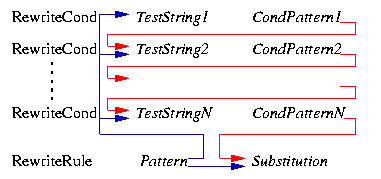

Apache HTTP Server 版本2.2

Apache HTTP Server 版本2.2

This document supplements the mod_rewrite
reference documentation. It
describes the basic concepts necessary for use of
mod_rewrite. Other documents go into greater detail,
but this doc should help the beginner get their feet wet.

The Apache module mod_rewrite is a very powerful and
sophisticated module which provides a way to do URL manipulations. With
it, you can do nearly all types of URL rewriting that you may need. It
is, however, somewhat complex, and may be intimidating to the beginner.
There is also a tendency to treat rewrite rules as magic incantation,
using them without actually understanding what they do.
This document attempts to give sufficient background so that what follows is understood, rather than just copied blindly.
mod_rewrite uses the Perl Compatible Regular Expression vocabulary. In this document, we do not attempt to provide a detailed reference to regular expressions. For that, we recommend the PCRE man pages, the Perl regular expression man page, and Mastering Regular Expressions, by Jeffrey Friedl.
In this document, we attempt to provide enough of a regex vocabulary
to get you started, without being overwhelming, in the hope that
RewriteRules will be scientific
formulae, rather than magical incantations.
The following are the minimal building blocks you will need, in order
to write regular expressions and RewriteRules.
| Character | Meaning |
|---|---|
. | Matches any character |
One important thing here has to be remembered: Whenever you
use parentheses in Pattern or in one of the
CondPattern, back-references are internally created
which can be used with the strings $N和%N (see below). These are available for creating
the strings Substitution和TestString.
Figure 2 shows to which locations the back-references are
transferred for expansion.

Figure 2: The back-reference flow through a rule.
Basic anatomy of a RewriteRule, with exhaustively annotated simple examples.
Discussion of the flags to RewriteRule, and when and why one might use them.
Discussion of RewriteCond, looping, and other related concepts.
Discussion of RewriteMap, including simple, but heavily annotated, examples.
Discussion of the differences between rewrite rules in httpd.conf and in .htaccess files.
This module keeps track of two additional (non-standard)
CGI/SSI environment variables named SCRIPT_URL和SCRIPT_URI. These contain the
logical Web-view to the current resource, while the
standard CGI/SSI variables SCRIPT_NAME和SCRIPT_FILENAME contain the physical
System-view.
注意：These variables hold the URI/URL as they were initially requested, i.e., before any rewriting. This is important because the rewriting process is primarily used to rewrite logical URLs to physical pathnames.
SCRIPT_NAME=/sw/lib/w3s/tree/global/u/rse/.www/index.html SCRIPT_FILENAME=/u/rse/.www/index.html SCRIPT_URL=/u/rse/ SCRIPT_URI=http://en1.engelschall.com/u/rse/